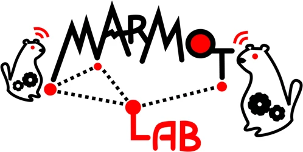
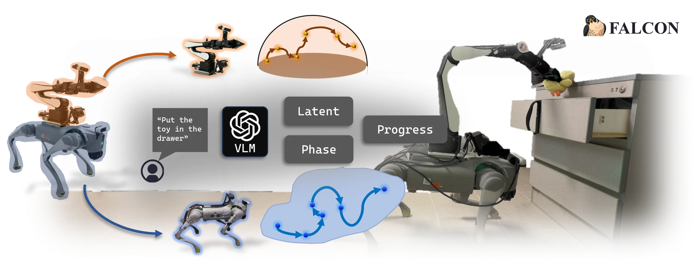
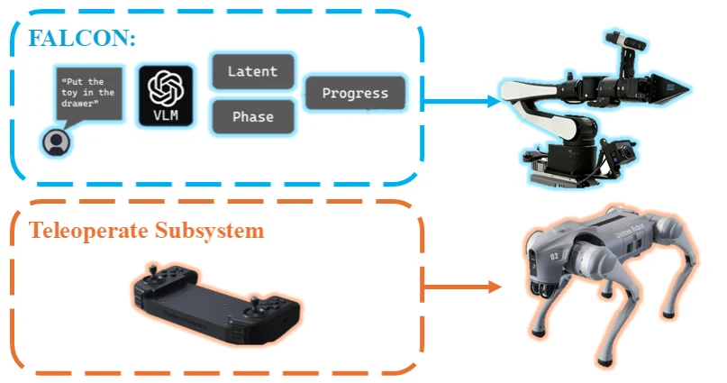
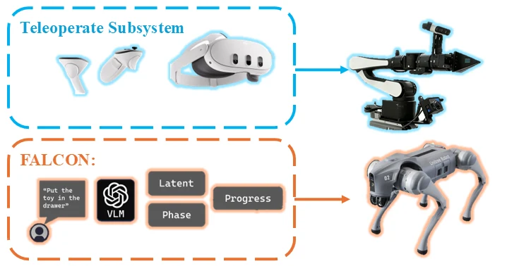
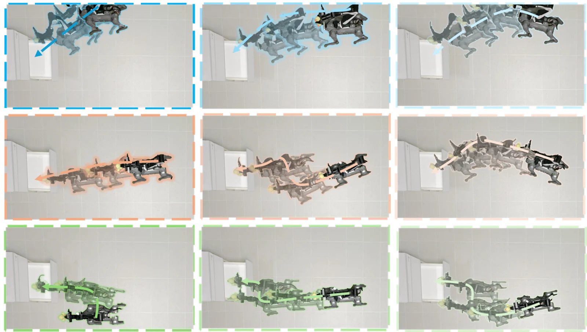
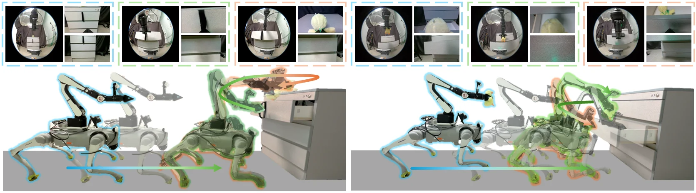

Decoupled diffusion policies
Dedicated arm and base policies learn in their own observation and action spaces.
National University of Singapore * Equal contribution

01 / The idea
Moving and manipulating require different perspectives. FALCON gives each its own policy, then brings them together with a vision-language foundation model.
Specialized diffusion policies act on their own observations. A shared representation of the scene, instruction, and task progress helps the arm and base work together.
We present FoundAtion-model-guided decoupled LoCO-maNipulation visuomotor policies (FALCON), a framework for loco-manipulation that combines modular diffusion policies with a vision–language foundation model as the coordinator. Our approach explicitly decouples locomotion and manipulation into two specialized visuomotor policies, allowing each subsystem to rely on its own observations. This mitigates the performance degradation that arises when a single policy is forced to fuse heterogeneous, potentially mismatched observations from locomotion and manipulation. Our key innovation lies in restoring coordination between these two independent policies through a vision–language foundation model, which encodes global observations and language instructions into a shared latent embedding conditioning both diffusion policies. On top of this backbone, we introduce a phase-progress head that uses textual descriptions of task stages to infer discrete phase and continuous progress estimates without manual phase labels. To further structure the latent space, we incorporate a coordination-aware contrastive loss that explicitly encodes cross-subsystem compatibility between arm and base actions. We evaluate FALCON on two challenging loco-manipulation tasks requiring navigation, precise end-effector placement, and tight base-arm coordination. Results show that it surpasses centralized and decentralized baselines while exhibiting improved robustness and generalization to out-of-distribution scenarios.

02 / The method
A modular architecture connects local observations with a global understanding of the task.
Dedicated arm and base policies learn in their own observation and action spaces.
A foundation model provides shared context, with phase and progress inferred without manual phase labels.
A coordination-aware contrastive objective aligns the two subsystems in the shared latent space.
03 / In the real world
Explore the task demonstrations, onboard observations, and additional robustness experiments.
Coordinated navigation, object placement, and drawer closing.
Control one subsystem while the learned policy operates the other. These demonstrations explore the modularity of FALCON’s decoupled policies.


A multi-stage sequence linking precise manipulation with base motion.
Control one subsystem while the learned policy operates the other. These demonstrations explore the modularity of FALCON’s decoupled policies.
The robot starts from multiple locations across the workspace. Training demonstrations are primarily collected in the center region; left and right regions test out-of-distribution initial positions.

Precise placement with varying object positions and external disturbances.
Whole-body manipulation under varied placements and external disturbances.

The framework is also evaluated on a wheeled mobile manipulation platform.
04 / Reference
If FALCON is useful to your research, please consider citing our paper.
@article{he2025falcon,
title={FALCON: Actively Decoupled Visuomotor Policies for Loco-Manipulation with Foundation-Model-Based Coordination},
author={He, Chengyang and Sun, Ge and Bai, Yue and Lu, Junkai and Zhao, Jiadong and Sartoretti, Guillaume},
journal={arXiv preprint arXiv:2512.04381},
year={2025}
}
Questions about FALCON? Get in touch with the team.